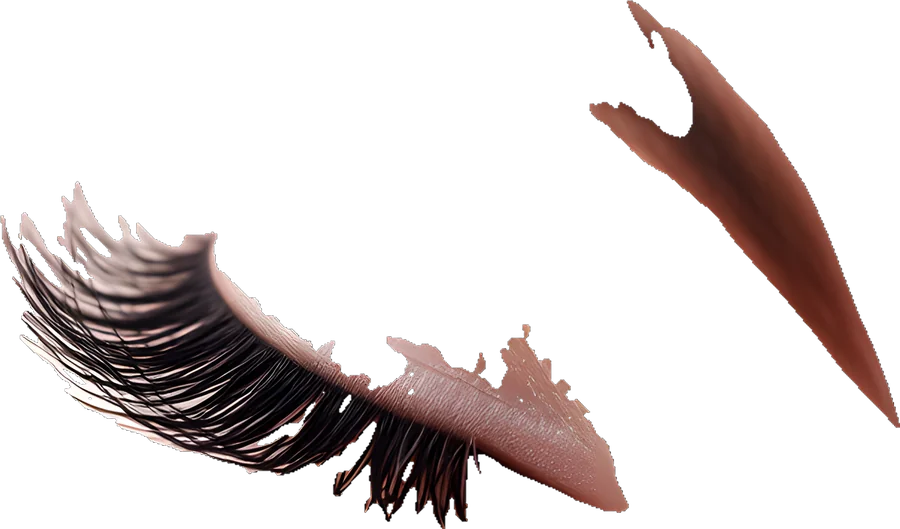
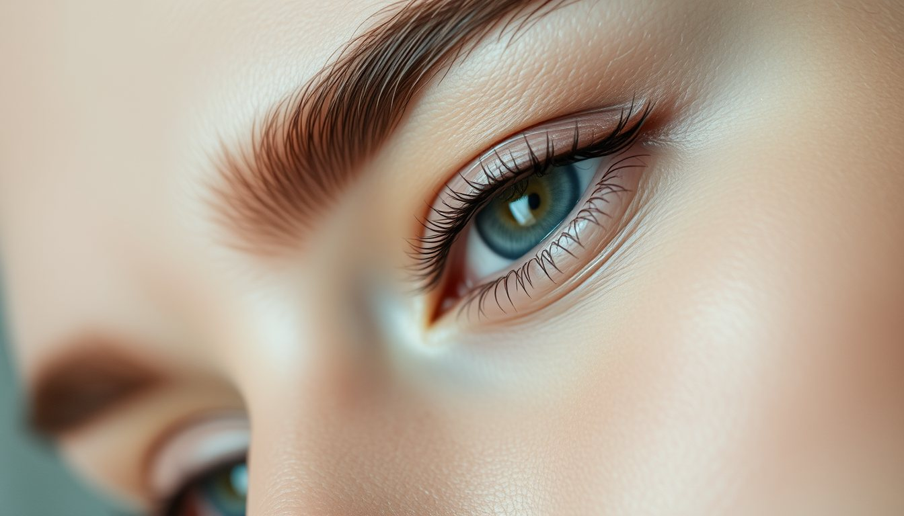
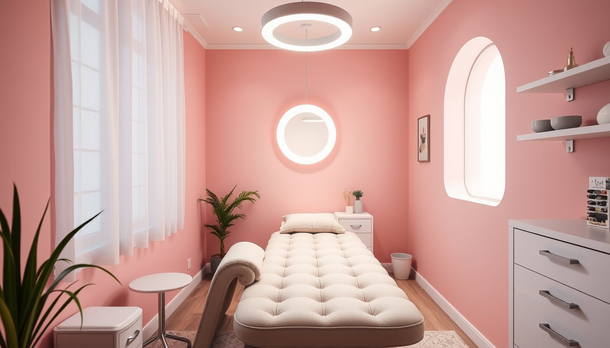
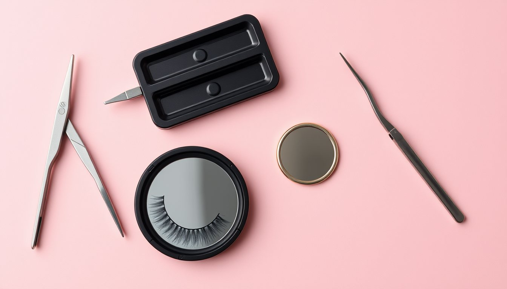

Göz yapınıza ve günlük hayatınıza göre seçilir. Kararsızsanız ilk seansta hibritle başlamanızı öneriyoruz.

Yüz oranlarınıza göre ölçü alınır; her kaş kendi doğal formunda şekillenir.


Randevular 15 dakika bekletilir. İlk kez geliyorsanız 10 dakika erken gelin; kısa bir alerji testi yapıyoruz.